Спроектировала мобильные сценарии для платформы онлайн-тренировок
Designed mobile experiences for an online workout platform
Видеокомната, регистрация и игровой прогресс тренировок. Развивала существующее приложение: проектировала новые функции на основе готовой дизайн-системы и адаптировала интерфейсы для телефона, iPad и веба.
Video workouts, registration and gamified workout progress. Developed new features within an existing app and design system, adapting interfaces for phones, iPad and web.

Новые сценарии внутри существующего продукта
New workflows within an existing product
MakeStep объединял прямые трансляции групповых тренировок, записи занятий и инструменты для тренеров. Я подключилась к готовому продукту и получала задачи на проектирование новых функций и доработку интерфейсов.
MakeStep combined live group workouts, recorded sessions and tools for coaches. I joined an existing product, working on assigned feature design and interface improvements.
Работала с готовой дизайн-системой: собирала пользовательские сценарии, проектировала экраны и состояния. Отдельно придумала механику геймификации с пирамидой прогресса. Ниже показываю выбранные примеры, которые раскрывают мою работу с мобильным интерфейсом.
I used the existing design system to design workflows, screens and states. I also originated the pyramid-based gamification concept. The selected examples below focus on my mobile interface work.
Сохранить тренировку в центре внимания
Keep the workout in focus
На небольшом экране нужно было совместить видео тренера, участников и управление трансляцией. Во время занятия человек занят движением, поэтому я предусмотрела быстрый сигнал «поднятая рука» и отдельный доступ к чату.
The small screen needed to accommodate the coach video, participants and broadcast controls. As people are exercising, I provided a quick raise-hand signal and separate access to chat.
- Режимы просмотра. Сетка участников, крупное видео тренера и раскладка с лентой миниатюр позволяют по-разному распределить место на экране.
- View modes. A participant grid, a large coach video and a thumbnail-strip layout offer different ways to allocate screen space.
- Управление рядом с видео. Основные действия собраны в нижней панели; реакция появляется на видео участника.
- Controls beside the video. Primary actions sit in a bottom toolbar; the reaction appears on the participant’s video.
- Чат на телефоне и планшете. На телефоне он открывается отдельно, с индикатором новых сообщений. На iPad расположен рядом с видео благодаря большему экрану.
- Chat on phone and tablet. On phones, chat opens separately with a new-message indicator. On iPad, the larger screen allows chat beside the video.
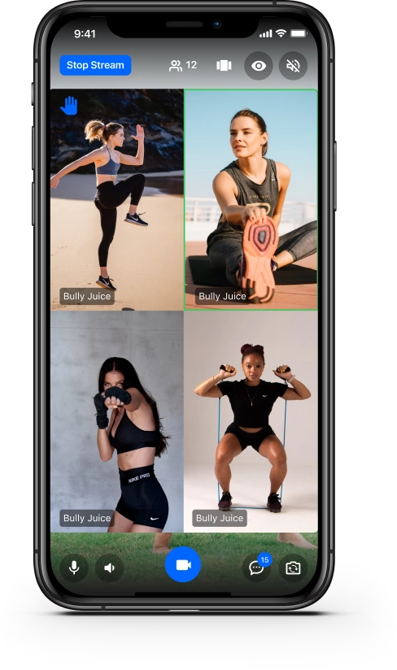
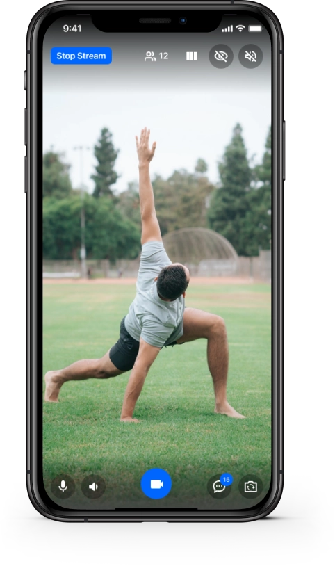
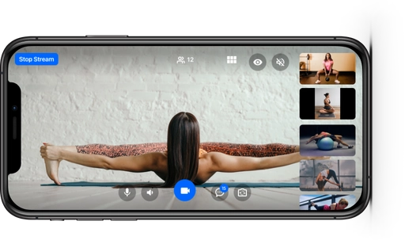
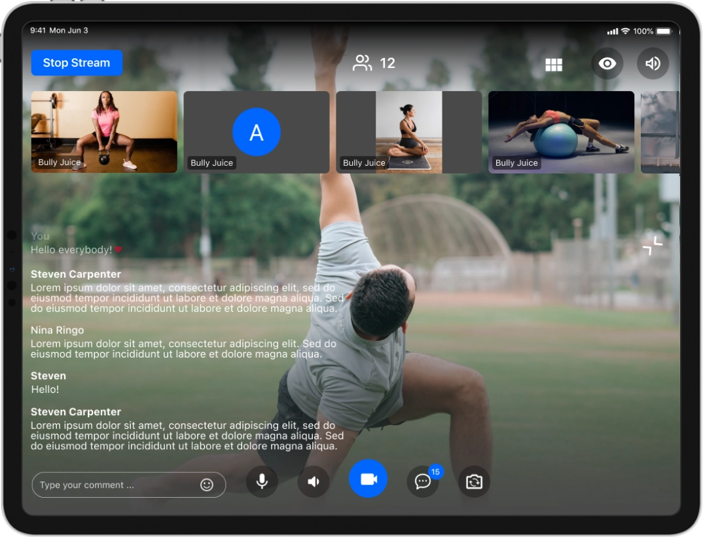
Проработать ввод, обратную связь и переходы
Design input, feedback and transitions
Переработала регистрацию на телефоне и десктопе: поля, кнопки, подсказки, требования к заполнению и состояния ошибок. В интерфейсе предусмотрены создание аккаунта, вход и авторизация через внешние сервисы.
Redesigned registration on mobile and desktop: fields, buttons, hints, input requirements and error states. The interface includes account creation, login and external sign-in options.
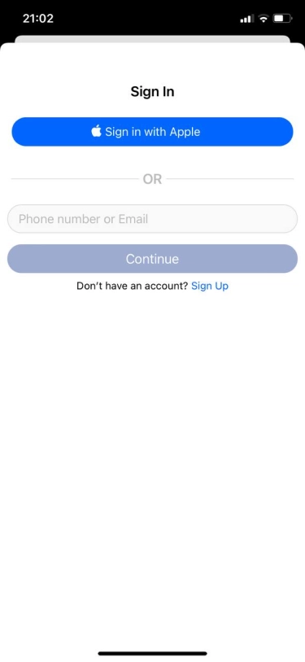
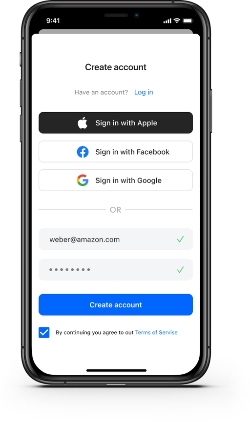
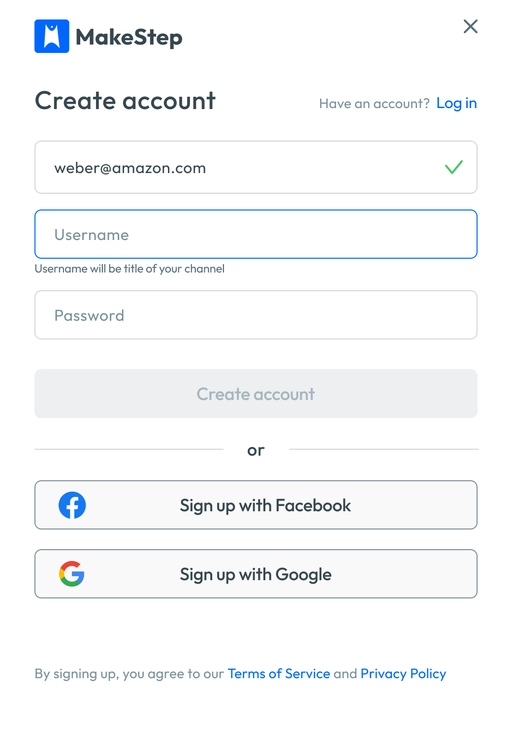
Также подготовила серию экранов знакомства с возможностями приложения: домашние тренировки, канал тренера, плейлисты и платный контент. Они раскрывают обе роли продукта до начала основной работы.
I also designed a sequence introducing home workouts, coach channels, playlists and paid content. It presents both product roles before the main experience begins.
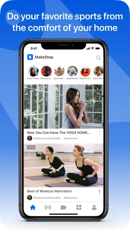
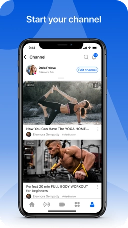
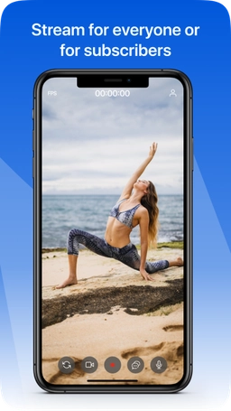
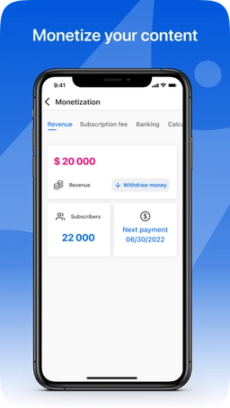
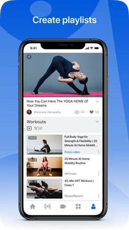
Превратить прогресс тренировок в подъём к вершине
Turn workout progress into a climb to the top
Я придумала игровую визуализацию прогресса в виде пирамиды. Вместо одного числового показателя пользователь видит фишки, уровни и движение к вершине. В интерфейсе сочетаются два цветовых ряда, числовые показатели тренировок и состояние победы «You win!».
I originated a pyramid-based visualization of workout progress. Rather than a number alone, it presents tokens, levels and a climb toward the top. Two colored tracks sit alongside workout counts and a “You win!” state.
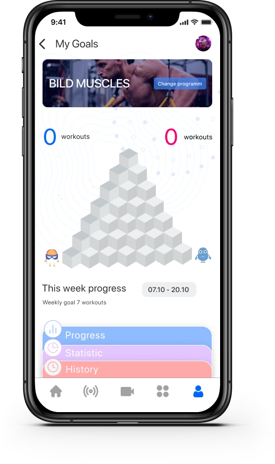
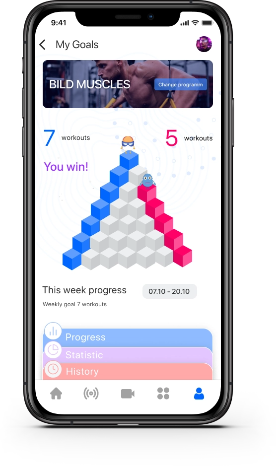
- Образ движения. Подъём по уровням связывает физическую активность с наглядной игровой метафорой.
- A movement metaphor. Climbing levels connects physical activity with a visible game metaphor.
- Разные состояния. Спроектировала начало недели с пустой пирамидой и состояние достигнутой цели. Показатели тренировок дополняют визуализацию.
- Distinct states. I designed the empty pyramid at the start of the week and the completed-goal state. Workout counts complement the visualization.
- Связь с профилем. Экран объединяет программу, недельный прогресс и переходы к статистике и истории.
- Connected to the profile. The screen brings together the program, weekly progress, statistics and history.
Задача концепции была поддержать интерес к регулярным тренировкам и сделать прогресс заметным. Механика реализована в продукте; её влияние на регулярность занятий отдельно не подтверждено измерениями.
The concept aimed to support interest in regular workouts and make progress visible. The mechanic was implemented; its effect on workout consistency has not been verified through measurement.
От выбора тренировки до инструментов автора
From workout discovery to creator tools
Помимо основных мобильных сценариев, работала над инструментами публикации, поиска и взаимодействия с контентом. Эти примеры показывают дополнительные формы, состояния и сценарии веб-платформы.
Beyond the main mobile workflows, I worked on publishing, discovery and content interaction tools. These examples show additional forms, states and web-platform workflows.
Создание трансляции
Creating a broadcast
Спроектировала форму с датой, временем, категорией, длительностью, ценой и ограничением числа участников.
Designed a form for date, time, category, duration, price and participant limits.
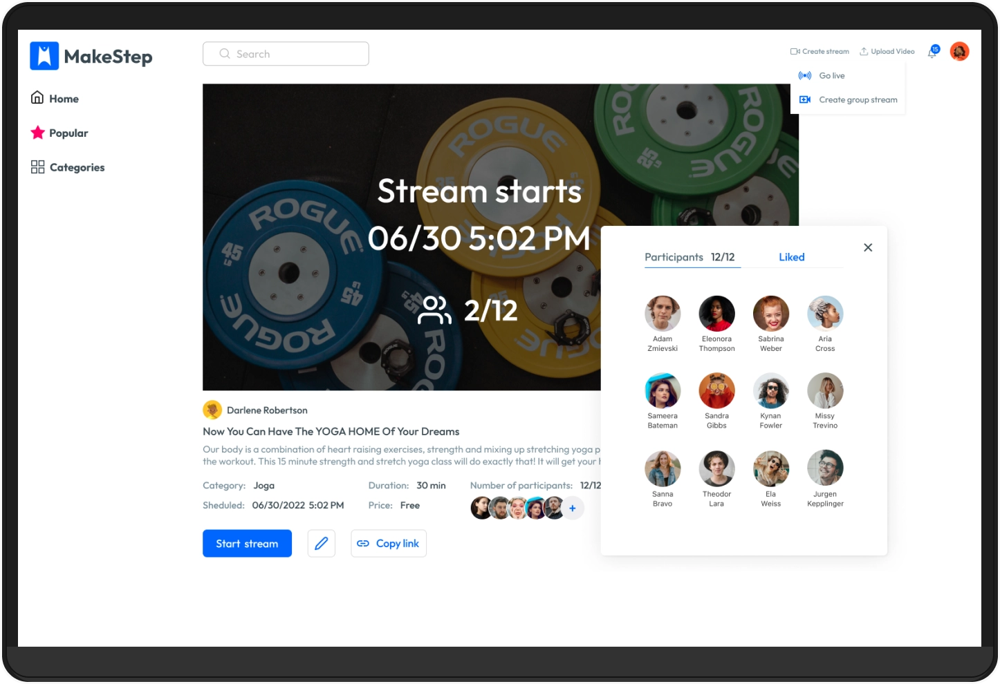
Загрузка видео
Video upload
Проработала состояния загрузки: прогресс в процентах, завершение, превью файла и сохранение.
Designed upload states: percentage progress, completion, file preview and saving.
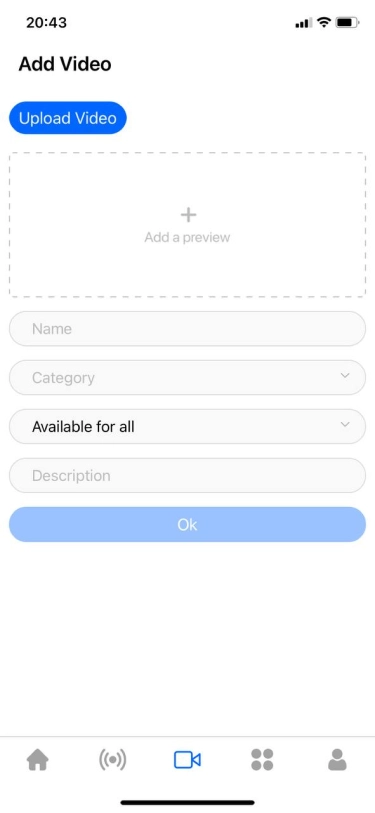
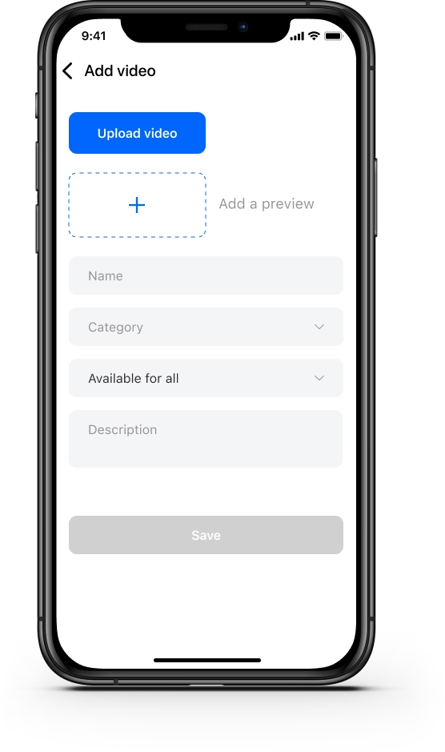
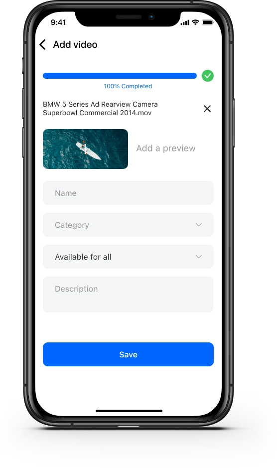
Инструменты тренера
Coach tools
Спроектировала раздел с выручкой, подписками и выплатами, а также создание и редактирование платных плейлистов.
Designed revenue, subscription and payout interfaces, plus paid playlist creation and editing.
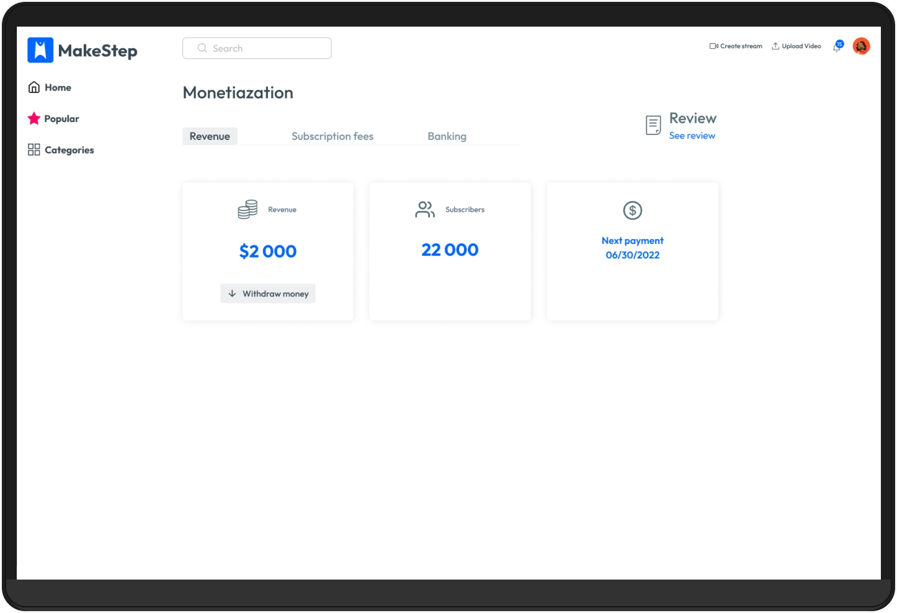
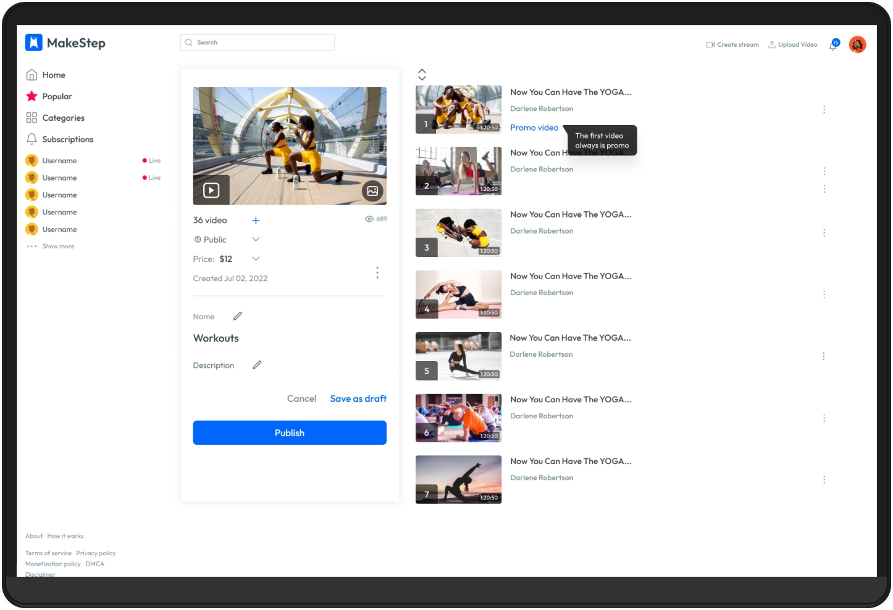
Категории тренировок
Workout categories
Обновила сетку категорий, добавила доступ к поиску и обозначение непрочитанных уведомлений.
Updated the category grid and added access to search and unread notification indicators.
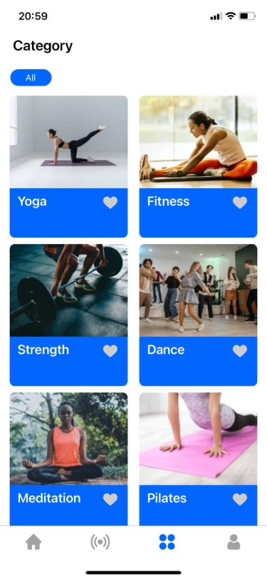
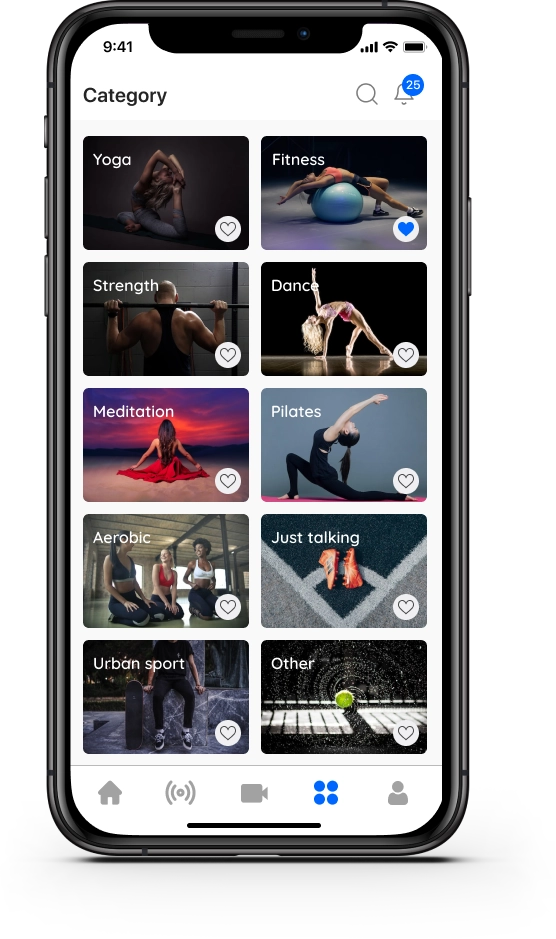
Комментарии к видео
Video comments
Проработала добавление, редактирование и удаление комментариев, поле ввода и пустое состояние обсуждения.
Designed adding, editing and deleting comments, the input field and the empty discussion state.
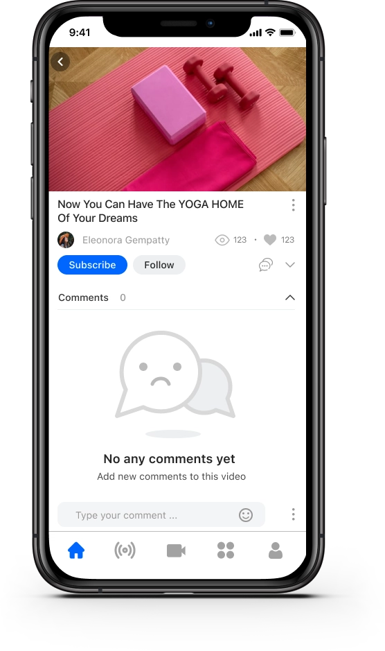
Мобильные сценарии, доведённые до реализации
Mobile workflows taken through to implementation
Все показанные решения были выпущены. В этой работе я проектировала интерфейсы в рамках существующей системы: от взаимодействия с видео до ввода данных и игровых состояний. Для телефона и iPad учитывала разное пространство экрана и состав доступных действий.
All designs shown were shipped. I designed within an existing system, from video interaction to data entry and game states, accounting for different screen space and available actions on phones and iPad.
Сейчас сервис закрыт. Кейс основан на сохранённых проектных материалах; количественный эффект изменений не заявляю.
The service has since closed. This case uses preserved project materials and does not claim a quantitative impact from the changes.
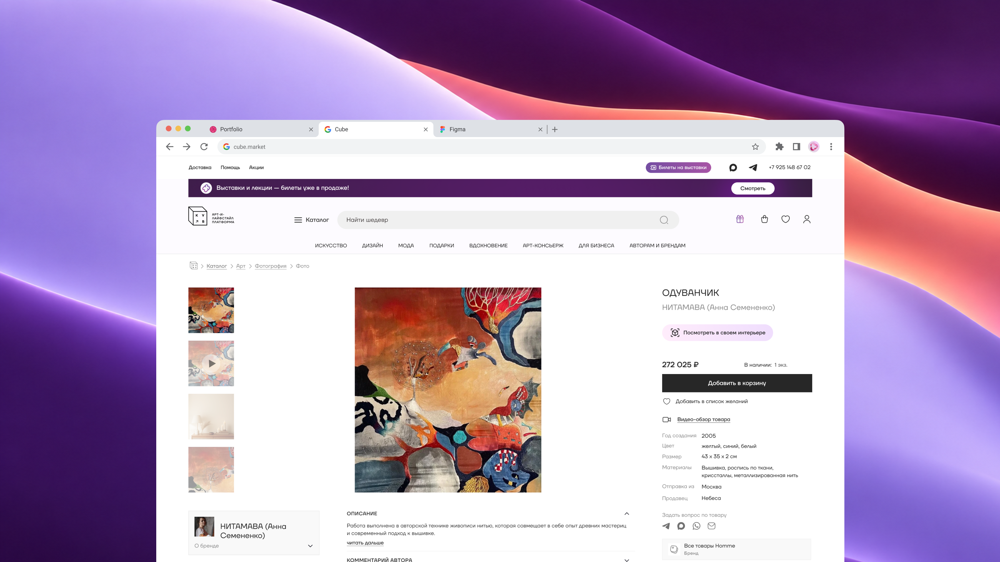